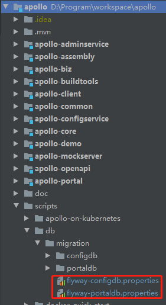
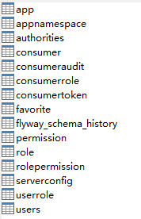
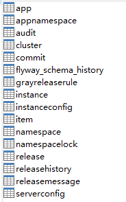
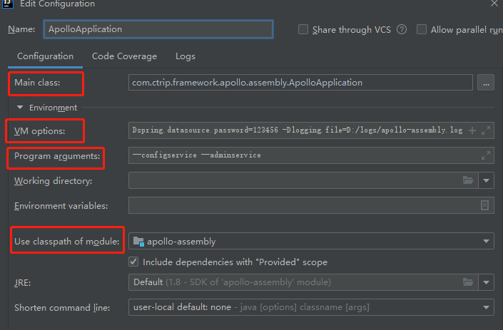
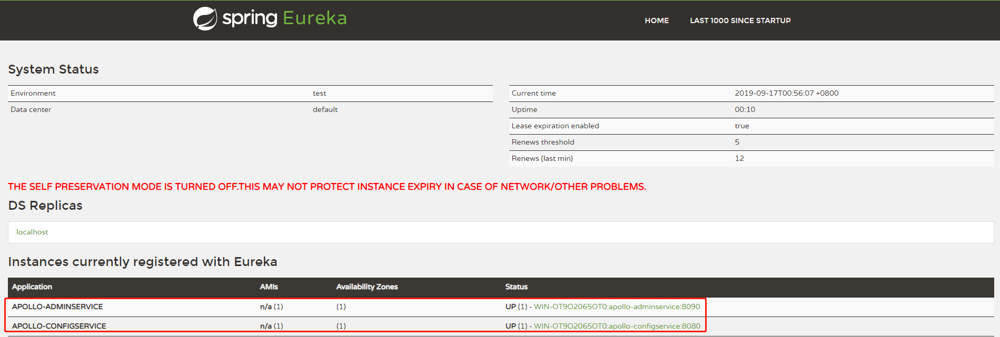
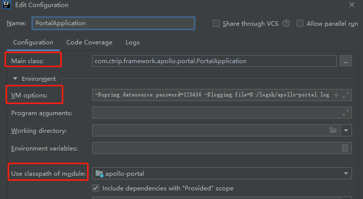
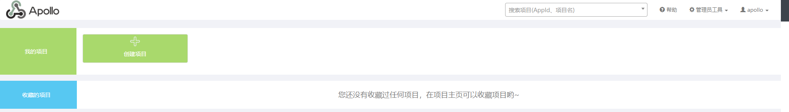
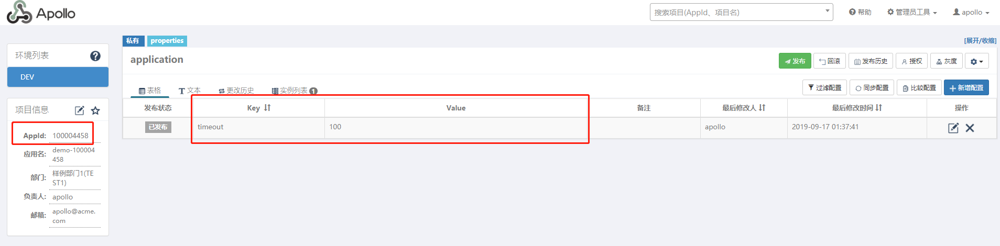
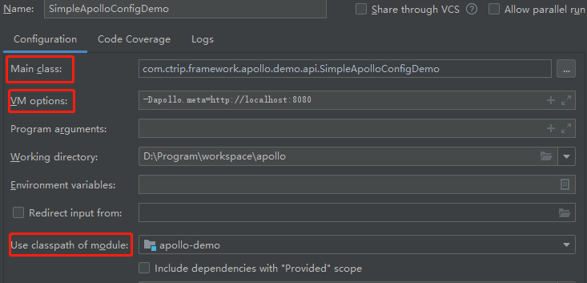

Apollo的表结构对timestamp使用了多个default声明，所以需要5.6.5以上版本。
从官方仓库 https://github.com/ctripcorp/apollo Fork 出属于自己的仓库 https://github.com/wupeixuan/apollo。
使用 IntelliJ IDEA 从 Fork 出来的仓库拉取代码。拉取完成后，Maven 会下载所需依赖包。
Apollo 服务端共有两个数据库：
ApolloPortalDB 只需要在生产环境部署一个即可，而 ApolloConfigDB 需要在每个环境部署一套，如 fat、uat 和 pro 分别部署3套 ApolloConfigDB。
可以根据实际情况选择通过手动导入SQL或是通过Flyway自动导入SQL创建。
在 Apollo 项目下的 scripts 目录，提供了对应的初始化脚本：

根据实际情况修改 flyway-portaldb.properties 中的 flyway.user、flyway.password 和 flyway.url 配置。
在 apollo 项目根目录下执行mvn -N -Pportaldb flyway:migrate
导入成功后，表结构如下：

根据实际情况修改 flyway-configdb.properties 中的 flyway.user、flyway.password 和 flyway.url 配置。
在 apollo 项目根目录下执行mvn -N -Pconfigdb flyway:migrate
导入成功后，表结构如下：

同时启动 apollo-adminservice 和 apollo-configservice 项目，基于 apollo-assembly 项目来启动。

Main class:com.ctrip.framework.apollo.assembly.ApolloApplication
VM options:
-Dapollo_profile=github
-Dspring.datasource.url=jdbc:mysql://localhost:3306/ApolloConfigDB?characterEncoding=utf8
-Dspring.datasource.username=root
-Dspring.datasource.password=123456
-Dlogging.file=D:/logs/apollo-assembly.log
Program arguments:--configservice --adminservice
Use classpath of module:apollo-assembly
- spring.datasource 配置连接 ApolloConfigDB 数据库
- logging.file 配置日志输出文件
启动完成后，当打开 http://localhost:8080/ 看到 APOLLO-ADMINSERVICE 和 APOLLO-CONFIGSERVICE 注册到 Eureka 中，代表启动成功。


Main class:com.ctrip.framework.apollo.portal.PortalApplication
VM options:
-Dapollo_profile=github,auth
-Ddev_meta=http://localhost:8080/
-Dserver.port=8070
-Dspring.datasource.url=jdbc:mysql://localhost:3306/ApolloPortalDB?characterEncoding=utf8
-Dspring.datasource.username=root
-Dspring.datasource.password=123456
-Dlogging.file=D:/logsh/apollo-portal.log
Use classpath of module:apollo-portal内置账号
- username ：Apollo
- password ：admin
启动完成后，当打开 http://localhost:8070，出现如下时，表示启动成功。

为了进行测试，需要创建测试的应用，Appid为 100004458 。如下图所示：


Main class:com.ctrip.framework.apollo.demo.api.SimpleApolloConfigDemo
VM options:
-Denv=dev
-Ddev_meta=http://localhost:8080
Use classpath of module:apollo-demo成功后，输出日志如下：
Apollo Config Demo. Please input key to get the value. Input quit to exit.输入 timeout ，回车，输出如下：
timeout
> [apollo-demo][main]2019-09-17 01:40:32,775 INFO [com.ctrip.framework.apollo.demo.api.SimpleApolloConfigDemo] Loading key : timeout with value: 100客户端日志级别默认是DEBUG，如果需要调整，可以通过修改apollo-demo/src/main/resources/log4j2.xml中的level配置
<logger name="com.ctrip.framework.apollo" additivity="false" level="trace">
<AppenderRef ref="Async" level="DEBUG"/>
</logger>